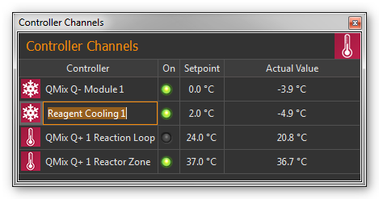
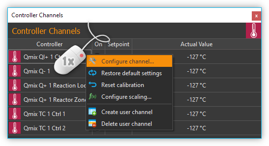
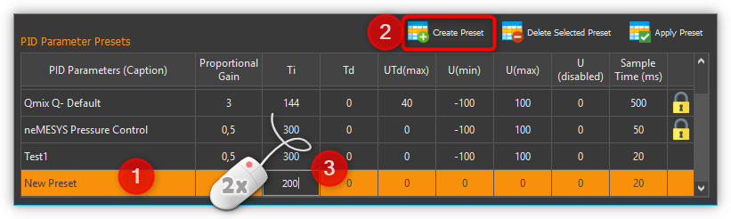
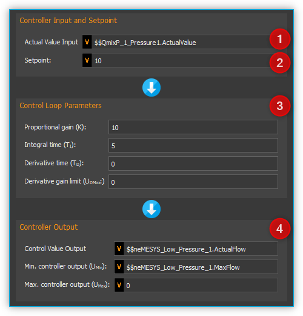
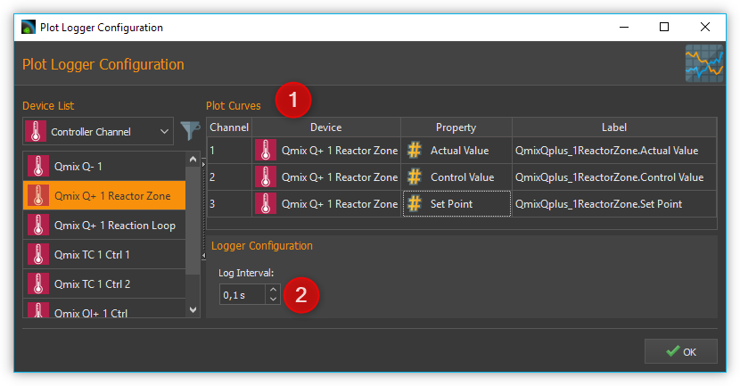
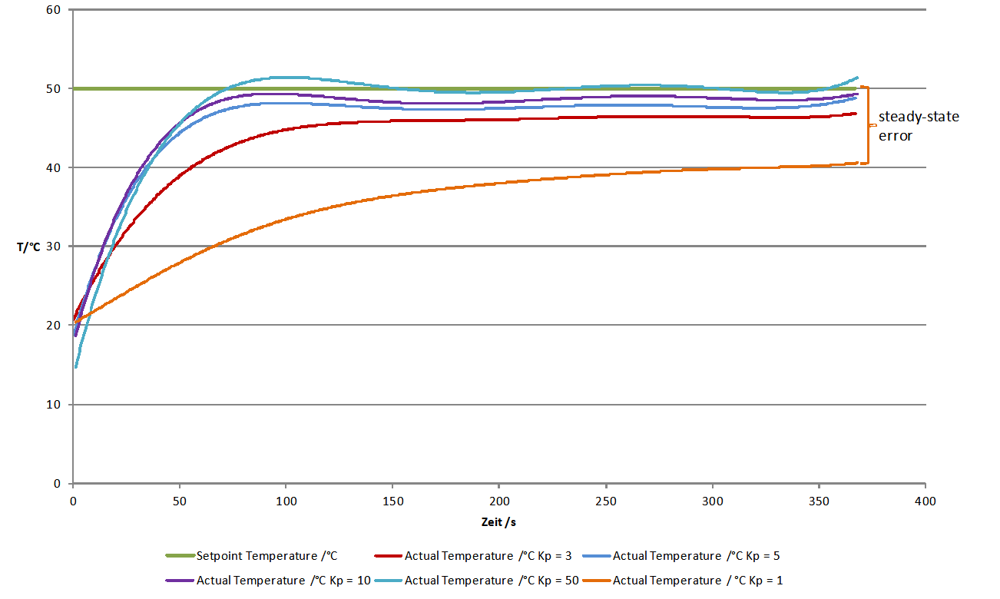

Controller Plugin
Introduction
The Controller plugin is used to integrate the CETONI controller modules into the CETONI Elements software and to allow the creation of dynamic user defined control channels. The following hardware modules are supported:

Qmix Q- - thermoelectric cooling module
Qmix Q+ - two-channel heating module
Qmix TC - two channel controller module for external heating-cooling-systems (i.e. for connecting syringe heating mounted on Nemesys syringe pumps)
Controller Channel List
All controller channels are shown in the Controller Channels list.

You can identify the different types of channels (cooling module Q-, heating module Q+…) by the different signs in front of the module names (see Figure above). The list of controller channels is a View, that you can move freely at any time to another position in the graphic interface by dragging and dropping the title bar, or you can move it out of the interface to become a separate window.
The channel list shows all the available controller channels in tabular form. The following columns are present:
Controller - shows the name of the controller module and indicates its type by a sign.
On - indicates by a green LED whether the controller is switched on or off. Click the LED to switch the control loop on / off.
Setpoint -contains the set setpoint of the controller channel
Actual Value - shows the actual value
Channel types
The following types of channels are currently supported:
|
Qmix Q- cooling modules |
|
Qmix Q+ heating modules |
dynamically generated, custom channels |
Changing channel names
You can change the name of a channel at any time and, for example, assign a name suitable for your particular application.

You change a name by the following steps:
Double-click the table cell containing the name you want to change.
Enter the new name in the Editing window which now appears (Figure above).
Complete your entry by pressing the Return key.
Switching control devices on / off

To switch the controller on or off, simply click the LED of the channel you want to switch.
Entering setpoint
To input a setpoint, double-click in the Setpoint column of the channel with the setpoint you want to change. Now enter the setpoint in the editing window that opens (Figure below) or use the arrow buttons to raise or lower the setpoint incrementally.

Context menu for control channels
By right-click into the control channel list you can display a context menu with additional functions.
The context menu contains the following menu items:
|
Configure Channel… Opens the configuration dialog of the channel for configuring all channel parameters. |
|
Restore Default Settings Restores the default settings of the channel. |
|
Reset Calibration Resets the two-point scaling to scale factor 1 and offset 0 |
|
Configure scaling… Opens the configuration dialog displaying the page for configuration of the controller scaling. |
|
Select PID parameters… Opens the configuration dialog displaying the page for configuration of the PID control parameters. |
|
Delete user channel If the selected channel is a user-specified channel, it is deleted by selecting this menu item. For other channels this menu item is disabled. |
Create user channel Opens up the wizard for creating user-specified control channels. |
Configure Channel Settings
For opening the scaling configuration dialog select in the context menu of the control channel.

The configuration of the general channel settings and the calibration of the controller channels are identical to the configuration of the I/O channels of the I/O Plugin. For a detailed description read the section I/O Channel Configuration.
Selection and configuration of controller parameters
Overview
To set the optimal control behavior, you can adjust the controller parameters of each single channel. For this you can either choose from a list of predefined PID parameter sets or create new parameter sets.
To access the controller parameters selection, choose from the controller channel context menu.

The upper area shows the current parameters of the device ❶ Current Channel Parameters. In the lower area you will find a list of PID Parameter Presets ❷.
Changing controller parameters
To edit the current controller parameters, double-click with the mouse in the Current Channel Parameters area in the field you want to change and enter the new value:

Selecting a PID Parameter Preset

Select a PID Preset from the table of available presets by left-clicking on it ❶ and then click on the Apply Preset ❷ button to apply the control parameters. The values in the Current Channel Parameters ❸ area are updated with the new values from the preset. Complete the configuration by clicking the Ok ❹ button.
The PID parameter presets already contain default controller parameter sets for different devices like Qmix Q+, Qmix Q- or Qmix TC or certain accessories, i.e. syringe heating or tube heating.
Tip
For optimum adaptation to the controlled systems in your application, you can create your own parameter sets with controller parameters.
Creating a PID Parameter Preset
By selecting the Create Preset button ❶ you create a new set of controller parameters ❷. (see figure below) You can then edit the individual values of the parameter set by double-clicking in a field ❸ and entering a new value.

Enter a meaningful, unique name for each parameter set and adapt the controller parameters to the controlled system in your application. For finding adequate controller parameters proceed as described in section How to set controller parameters.
Deleting PID Parameter Presets
Select a set of controller parameters from the table ❶ and left-click the Delete Selected Preset button ❷ for deleting it. (see figure below).

Important
Predefined controller parameters are locked and can not be deleted. Locked parameters can be recognized in the table by the lock symbol.
User defined control channels
Introduction
You can create customized control channels using arbitrary device properties for control loop input and output. Thus using i.e. a pressure measurement channel of a QmixP device and a Nemesys syringe pump you can build up a pressure control.
Creating control channels
By right-clicking the control channel list and selecting the menu item in the context menu, you open the dialog for creating custom control channels.

In the configuration wizard that is displayed now, proceed as follows:

Select the device that provides the measurement value of the controller: Controller Input
Select the device property that is used as measurement value.
Select the device that provides the control value of the controller: Controller Output
Select the device property that is used as control value.
Click Next in order to proceed.
The final page of the wizard allows configuration of controller channel parameters as described in section Selection and configuration of controller parameters. You complete the control channel creation by clicking the Finish button.
Tip
You can change the controller parameters at any later time and adapt them perfectly to your controlled system.
Changing the output value scaling or unit
The output value is determined by the PID control algorithm and written to the output device without any scaling information. This means that you need to adjust the controller parameters, in particular the control value limits, each time you change the scaling or the unit of the appropriate device. With a Nemesys dosing module this is also true if you change the syringe size.
Important
If you change the scaling or unit of a device beeing part of a control loop you must check the control parameters and adjust them if necessary. With a neMESYS dosing module this also applies if you change the syringe.
Controller Script Functions
Introduction
The controller plugin contains script functions for changing the controller parameters from a script. This makes it possible to achieve, for example, time controlled temperature curves.

Set Controller Param

With this function, you can transfer a new setpoint to the controller channel or switch the control loop on or off. To switch it on and off, simply click the Control loop on / off LED in the configuration area (see figure below).

PID Control Function
Introduction

This function implements a PID controller using a PID algorithm for applications that require an efficient algorithm. The PID algorithm features control output range limiting with integrator anti-windup.
Currently, the Proportional-Integral-Derivative (PID) algorithm is the most common control algorithm used in industry. Often, people use PID to control processes that include heating and cooling systems, fluid level monitoring, flow control, and pressure control. In PID control, you must specify a process variable and a setpoint. The process variable is the system parameter you want to control, such as temperature, pressure, or flow rate, and the setpoint is the desired value for the parameter you are controlling. A PID controller determines a controller output value, such as the heater power or valve position. The controller applies the controller output value to the system, which in turn drives the process variable toward the setpoint value.
Configuration
In the configuration area of this function you can configure all parameters required for proper PID control.
You need to configure the following parameters:
Actual Value Input – this parameter specifies the measured value of the process variable being controlled. This value is equal to the feedback value of the feedback control loop. Enter a variable name here, or enter a Device Property Identifier in order to directly read specific process data of a certain device.
Setpoint – specifies the setpoint value, or desired value, of the process variable being controlled. You can enter a fixed value (like 50°C) or you can pass the value in a variable.
Control Loop Parameters – specify the proportional gain (K), integral time (TI) , and derivative time (TD) parameters of the controller and thus directly affect the control characteristic of the controller.
Controller Output – This section groups all settings for the controller output. Control Value Output returns the control output of the PID algorithm that is applied to the controlled process. I.e. if you implemented a temperature control loop, the Control Value Output would be the heating power that must be generated from the heater. Enter a variable name of a variable that can store the output value or use a Device Property Identifier to write the value directly into a device property of a certain device.

With the parameters Umax and Umin you limit the range of the controller output. If you e.g. control the heating power via a 0 – 5 V analog output, then enter 0 for Umin and 5 for Umax. If the control algorithm generates values that are outside of this range, they will be limited to the range automatically.
Tip
You can use the PID control function to implement a P, PI or PD controller by simply setting the unneeded PID gains to 0.
PID control parameters
A set of PID control parameters contains a proportional, an integral and a derivative part.
Proportional part
The proportional part computes the control deviation from the setpoint (W) and the actual value (X)

and multiplied with the proportional gain, gives it as control value (Y) to the controlled system. The following equation shows the proportional part.

Integral part
Mathematics forms the integral part the area enclosed by control deviation and timeline. If there is a contant control error, the integral part grows ramp shape.
For a constant control deviation the equation is:

Yt0: Control value at th./Pictures/e beginning of the observation
Ti: Integration time
If the actual value equals the setpoint the control value does not change. The control value built up by the integral part remains and will not decrease until the actual value exceeds the setpoint value. With controlled systems containing a delay line the integral part eliminates the steady-state error which a proportional controller is not capable of. In general the following equation holds for the integral part.

With the integration time the speed of the controller can be changed. The smaller T*I the faster the integral part builts up a control value. The given equation states that the proportional gain K, too, impacts the integral part. In CETONI Elements the integral part can only be configured in conjunction with the proportional part. Thus the following equation applies:

Important
The integral part compensates the steady-state control error.
Derivative Part
The derivative part counteracts changes in the actual value. Two scenarios can be considered with respect to the effect of derivative part.
After the actual value has reached a stable final value, it is decreasing because of a disturbance suddenly occurred. The derivative part gives an additional control value that helps increasing the actual value.
If the setpoint value is increased, the actual value increases too. The derivative part recognizes the increasing actual value and slows down by an additional negative control value starting up to the target value.
In practical use the derivative part occurs only in combination with a proportional part. The controller equation is:

The bigger the proportional gain K and the derivative time TD the bigger the effect of the derivative part and the stronger the change of the actual value is counteracted.
Summary
The following table summarizes the effect of the different control parameters.
PID parameter |
Regulating on a disturbance of the controlled system |
Start-up of the setpoint |
|---|---|---|
K higher |
stronger repsonse (reduced damping) |
faster start-up |
K smaller |
weaker response (increased damping) |
slower start-up |
TI higher |
weaker repsonse, particularly on short-term disturbances, the controller has only a weak response |
Slower start-up and compensation of the steady-state error |
TI smaller |
stronger repsonse, particularly on short-term disturbances, the controller has only a weak response |
faster start-up and compensation of the steady-state error (Overshooting if TI is too small) |
TD higher |
stronger repsonse |
slower start-up (stronger reaction against changes in actual value) |
TD smaller |
weaker response |
faster start-up (weaker reaction against changes in actual value) |
Programming the control loop
This section shows you how to realize a complete PID control loop in a script program by using the PID control function.

To implement a control loop, proceed as follows:
The controller must be called cyclically in a fixed time interval. For this, you should use a loop. In this case, use a conditional loop Conditional Loop with the loop condition 1. The condition 1 is always true and the loop runs forever and never stops, except the user stops program execution manually.
Now create a PID Control Function within the loop and configure all parameters.
Inside the loop you need to place a Delay to insert a defined delay time 200 milliseconds. This time determines the frequency, with which the control algorithm is called and hence the dt that is used in the algorithm for the calculation of the control parameters.
Now you have built a control loop that reads the current temperature via an analog input, computes an output value in the PID control function, which is then used with an analog output for adjusting the heating power.
Tip
According to control theory, a control system must sample a physical process at a rate about 10 times faster than the fastest time constant in the physical process. For example, a time constant of 60 s is typical for a temperature control loop in a small system. In this case, a cycle time of about 6 s is sufficient. Faster cycling offers no improvement in performance
How to set controller parameters
Closed control loop and PID controller equation
The controller (e.g. PID controller) and the controlled system (e.g. temperature-controlled system) together make up a feedback system, the closed control loop. (see figure below)

A PID-controller determines thh control value u at the time t1 using the following equation:

The control value contains 3 shares.
|
The proportional share (P) forms by means of the factor Kp the direct effect of the control error on the control value. |
|
The integral share (I) computes the sum of the error over the time and by means of Kp and the time constant Timaps it to the control value. The bigger Kpand the smaller Tithe bigger the integral share of the control value. |
|
The differential share depends on the temporal change of the actual value that is mapped to the control value by Kpand Td. |


{kind=link}
{kind=link}
Preparations for setting controller parameters
Initially make the plot of the datalogger plugin show the measurement value and the control value to you. (refer to section Process Data Graph) ❶ It is recommended to do the same with the setpoint value. It is not necessary but facilitates orientation within the plot. (see figure below)

The setting for Log Interval ❷ depends on the change frequency of the actual value. You should get a useful graph if you set Log Interval to the sample time used by your control channel (see next section).
Choosing the sample time
The time between 2 computations of the control value is defined as sample time. The smaller the sample time the more often the control value is calculated. As a rule of thumb you can keep in mind that the sample time should not be higher than one tenth of the smallest time constant in the closed control loop. Experiences have shown that the following values achieved useful results (stable control) with the appropriate devices.
Application |
Sample Time (ms) |
|---|---|
Qmix Q+ |
500 |
Pressure control using Nemesys and Qmix P |
50 |
Tip
For the sample time choose values that are less than or equal to 1/10 of the smallest time constant occurring in the control loop.
Setting the control value limits
You can limit the minimum (Umin) and the maximum (Umax) control value of the controllers. The control value should have a sufficient stroke in order to reach the desired setpoint values. But you should also take care not to damage the controlled system by choosing to large control value limits. (e.g. too high flow rate of a neMESYS dosing module in a pressure controlled system leads to damage of the fluidic system) You should test the control value limits by temporarily acting with them on your controlled system. (e.g. dose with a Nemesys pump using a flowrate equal to the control value limit) Futhermore you have to choose a value assumed by the controller if the control channel is disabled (Udisabled) which is usually zero.
Attention
Insufficient limitation of the control value can lead to damage of the controlled system.
Determination of PI parameters
A temperature control system usually makes up a delay line containing one or more delay time constants. It can often be approximated by a first-order delay line. The appropriate step response function is:

Setting the controller parameters targets the compensation of the delay time constant T1and adapting the controller gain Kp in order to reach an efficient control behaviour. In practice T1is often unknown, but you can gradually approach to a useful result using the following procedure.

Choose the values for Sample Time, Umin, Umax und Udisabled according to the recommendations in the previous sections. Disable the differential and integral share by setting the controller time constants to 0. This leads to a simplified controller equation.
\[U = {K_{p} \cdot e}\]Set a moderate value for the proportional gain. Keep in mind that by means of Kp the control error immediately impacts the control value. Choosing a too big value for Kpcan drive the controller into saturation.
Give a setpoint step to your control loop, i.e. by changing the setpoint temperature from room temperature to 50°C and activating the control channel. (see section Entering setpoint and Switching control devices on / off)
Providing a first-order delay line the actual value will behave according to the following figure.
Depending on chosen controller proportional gain Kp the actual value will vary quickly settle near the setpoint value. Due to the fact that a proportional controller is not able to fully compensate a delay line, a steady-state error establishes. If Kp is set too low, the actual value approaches only very slowly the target value. (see curve for Kp = 1 in figure above) If Kp is set to high, the actual value overshoots, optionally oscillates about the setpoint. (see curve for Kp = 50 in figure above) In the provided example the actual value reaches a steady-state quickly without overshooting using Kp=3. This is why we use that value for further optimizations.
In the next step set Tiin a way that the steady-state error is compensated. You should begin using a large time constant Ti which means a small integral share.
Give a setpoint step to your control loop, i.e. by changing the setpoint temperature from room temperature to 50°C and activating the control channel. (see section Entering setpoint and Switching control devices on / off)
Lower the time constant Ti if you want to reduce time for permanently reaching the setpoint value. Please notify that a time constant Ti set to small (large integral share) can lead to the control loop oscillating. In the provided figure you can see that Ti=260s leads to a good result. The actual value matches the setpoint value and the system does not oscillate. Using Ti=1000s the setpoint is not reached within the illustrated time range and Ti=20s leads to the system overshooting heavily. (see figure below)
In many cases (i.e. temperature control) a PI controller is sufficient. There is no steady-state error and the dynamic behaviour is satisfactory. If the controller shall be robust with respect to sudden disturbances, it might be useful to include a differential component. A detailed consideration of control stability, control behaviour with respect to setpoint changes and disturbances is beyond the scope of this practical introduction. Reference is therefore made at this point on the control engineering literature.

Now create a PID parameter preset with the values you have determined and assign a unique name.